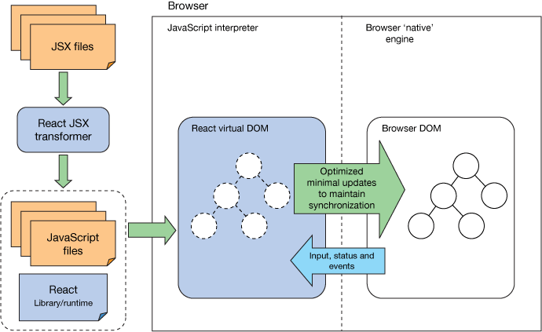

Highlights
- Not intended to be a write once, run anywhere solution; but learn once, write anywhere. --[Mastering React Native]
- It is often relegated to only a view-layer solution, and that characterization is mostly correct. React has some mechanisms for maintaining internal state, but it has no opinion about or solutions for data flow and management, server communication,
routing, or other common frontend application concerns. --[Mastering React Native]
- You need react.js and react-dom.js libraries. The first is universal to all platforms. The second one is used for web app only, which means if you are working with React Native, you dont need it.
- To render an element into a DOM node, call ReactDOM.render().
ReactDOM.render(React.createElement(
'h1',
null,
'First React!'
), document.getElementById('reactContent'));
The HTML markup it generates:
<h1 data-reactroot="">First React!</h1>
- Be default, React elements are immutable. Once you create an element, you can't change its children or attributes. An element is like a single frame in a movie: it represents the UI at a certain point in time.
- Applications built with just React usually have a single root DOM node. If you are integrating React into an existing app, you may have as many isolated root DOM nodes as you like.
- In practice, most React apps only call ReactDOM.render() once.
Reference
- Learning React: Introducing React
- Mastering React: Introduction to ReactJS
- Thinking in React
The solution proposed by the React framework is to keep a representation of the DOM in memory, called a virtual DOM, and make all alterations there. Once the alterations have been made in memory, React can apply the minimum number of changes necessary to reconcile the real DOM with the virtual DOM. This also can allow quickly successive changes to be batched for greater efficiency. Taking this approach can lead to great gains in performance that can be noticed by end users.--[Mastering React Native]
